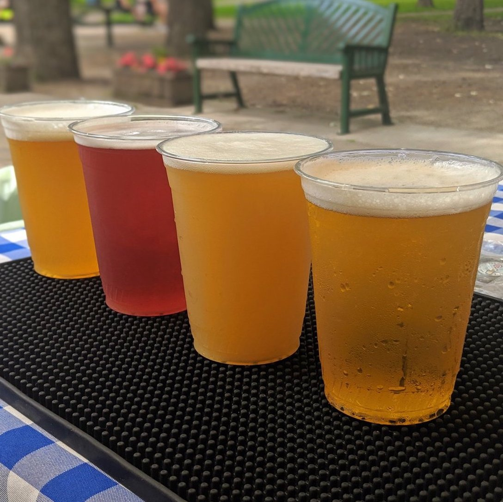
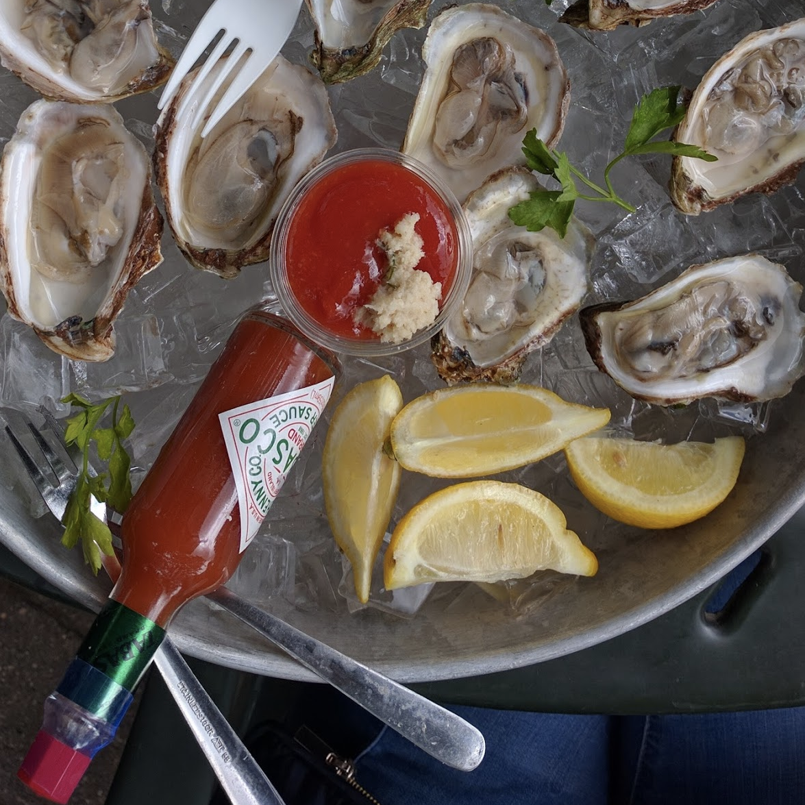

Serving extraordinary fresh seafood, wine & beer daily April through October.


Sea Salt Eatery is a seasonal restaurant located in Minnehaha Park. We open in the spring and close
temporarily for business in the late fall.
Here's a couple things you should know about us to ensure a positive visit!
1. Reservations are not accepted; we operate on a first come, first served basis. We are a casual restaurant
where you order your food at the counter and we deliver your order to your table.
2. We do not offer catering as we are a high volume restaurant with a smaller kitchen and limited
cooler/freezer space. Phone orders are not accepted; however we do offer most of our menu to-go if you come
in to place your order.
3. With the exception of trained service animals, pets of all kinds are not allowed inside the restaurant.
Dogs are welcome on the patio but must be kept on a leash.
Tips and tricks for busy days:
1.There are 3 separate lines: one for food, one for drinks and one for ice cream.
2.Feel free to order drinks at the beverage line before you order food!
3.Get in the food line to place your order. Focus on the beautiful park and line buddies
instead of the wait.
4.Large group? Take everyone's order while someone else finds a table!
5.After ordering you will be given a number for your table. Make sure your number is clearly
visible so staff can bring your food out easily!
6.Compostable silverware and napkins will be brought with your food.
7.Drinks and ice cream lines are separate and usually less of a wait.
8.Eat, drink, enjoy and check out the hot sauce collection inside!